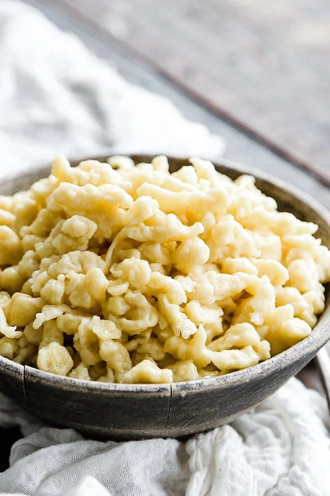

Nokedli (Hungarian Dumplings)

- Prep Time
- 15 minutes
- Cook Time
- 10 minutes
- Total Time
- 25 minutes
- Servings
- 2-3 servings.
- When I make this to serve alongside chicken paprikash, I usually make enough dumplings to accomodate 2-3 people, myself, my wife, and the occasional guest. Feel free to double or triple the recipe to suit your needs!
Nokedli are traditional Hungarian dumplings made from a simple dough of flour, eggs, and water. They're small, soft, and usually served as a side dish, often with stews like chicken paprikash. They're similar to German spaetzle. As far as the cooking process goes, there's nothing to it!
Ingredients
- 1 large egg
- 2 cups of all-purpose flour (to start)
- 1 cup water
- ½ teaspoon salt
Recommended Additional Equipment
Directions
- Step 1
- Combine eggs, salt, and water, beating well with a whisk
- Step 2
- Add more flour, about ½ cup, a little at a time.
- Step 3
- Add more water, about ½ cup, and mix well. Try not to add too much or too little. Dough should not be watery, nor should it be too dry.
- Step 4
- Now, it simply needs more flour and more water. Repeat steps 2 & 3 roughly 3-4 times. As dough increases in size and thickness and it becomes difficult to mix with the whisk, switch to using a wooden spoon.
The dough is ready when you can scoop up a lump of it with the wooden spoon and it falls off the spoon very slowly.
- Step 5
- Portion an amount of the dough onto a cutting board. Afterward, take a knife and proceed to cut and push off thin slivers of the dough into the boiling water. Do this until you are out of dough.
- Step 6
- As the dumplings boil, you'll know they're about done when they begin to float to the surface of the water. This is where the spider strainer comes in handy to remove them from the water without emptying the entire pot. I usually give this about 10 minutes. You don't really have to worry about overcooking them. Use your best judgement, and sample a dumpling that looks ready. It should be soft and tender.
- Step 7
- Place finished dumplings into a colander. Once you're done cooking them, quickly rinse with a quick burst of cold water and allow them to drain. They're ready to serve alongside your main dish.